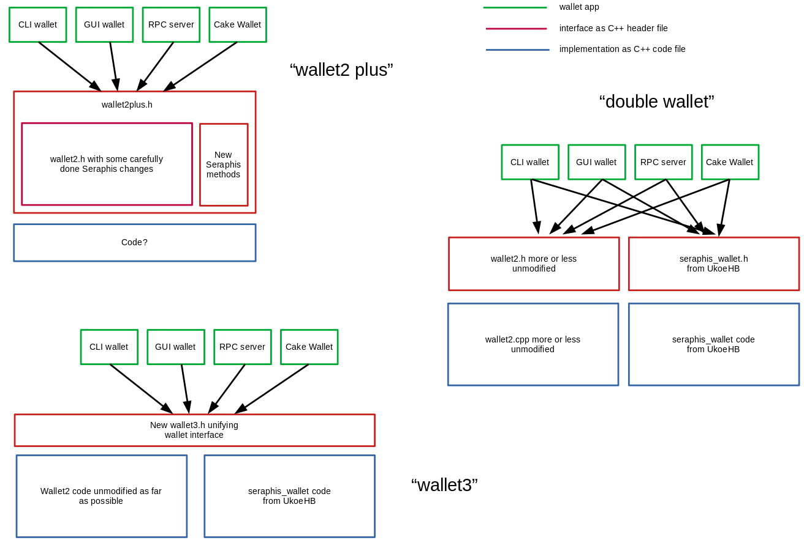

I asked myself the question: How could we best manage and adapt the programming of Monero wallet apps like the CLI wallet, the GUI wallet, smartphone wallets like Monerujo and Cake Wallet, and others, in the light of the coming switch to Seraphis and Jamtis? (For more background info check this issue on the Monero GitHub.)
I document here the current state of my brainstorming about that question. It's all very early, very open, not meant to champion already a particular approach, not meant to push anybody anyway from or towards doing something. It is meant to provide a starting point to start the discussion.
I use the term API here: The interface that the Monero core software offers to wallet app devs to handle the actual wallets. For most Monero wallets today that API basically consists of the C++ header file wallet2.h: Doing operations on a wallet means calling different methods that are defined there.
One thing seems to be sure already: It won't be possible to support Seraphis and Jamtis with a fully unmodified wallet2.h because of various differences in the way wallets will work. Nobody has worked out yet a clear list of all the points that will have to change, however.
UkoeHB, the cryptographer that created Seraphis, is currently implementing code to handle Seraphis wallets, as a "proof of concept" and to show "how it's done". When designing that he did not care about wallet2.h nor about wallet2.cpp but started with a clean slate, out on a "green field" so to say. This code is labelled seraphis_wallet in the following graphic.
As APIs go you probably can't say that wallet2.h is particularly well designed, with a consistent naming, consistent method parameters and fields of structures, a nice grouping of methods according to purpose, and so on. It's therefore not unreasonable to brainstorm about using the big Seraphis and Jamtis switch as an opportunity to introduce a new and better wallet programming API, carefully designed as such, and also designed with additional changes in the future in mind.
Note that I don't talk here about the implementation, about wallet2.cpp. That would be interesting as well of course, but any changes there or even a complete replacement of that code file by something else would probably not influence wallet programming much. I want to put the primary focus on interfaces here, in an attempt to make the transition of wallet apps as easy as possible: "No Wallet Left Behind", as I called it in the linked GitHub issue.
When thinking about Monero's future wallet API on a high level of abstraction I was able to come up with only 3 general approaches that I tried to illustrate on the following graphic:
I will now give some key info about each of those approaches, their probable advantages, and possible disadvantages.
The approach called wallet2 plus is an attempt to keep the current API wallet2.h as intact as possible and make only changes there that are really necessary to support Seraphis and Jamtis, which hopefully won't be too drastic and numerous.
Possible advantages are low effort needed to modify wallet apps to the resulting interface, and no learning of a brand new interface.
Possible disadvantages are a further degradation of the quality and consistency of the API, and a wasted opportunity to go a level higher there.
It's not clear at all how you would implement this API - note the Code? with a question mark in the graphic. Supporting Seraphis and Jamtis will need substantial amounts of new code, and the monolithic wallet2.cpp file is too big for comfort already today: IMHO we really should not stuff new code in there to the tune of many hundreds of lines.
The approach called double wallet means that the Monero dev team does not offer a single API able to work before and after the hardfork to Seraphis and Jamtis and able to support both "old" and "new" wallets, but offers two distinct interfaces by leaving wallet2.h unmodified and adding a new Seraphis-specific interface.
How to deal with those is left to the wallet app writers. Their reaction might be to not attempt to offer a single app that seamlessly continues to work through the hardfork, but to build a new app, e.g. Monerujo Seraphis, that will start to work on the day of the hardfork and will merely be able to import "old" wallet files.
Possible advantages are lower implementation effort for Monero devs because no common layer needs writing, and a nice new API.
Possible disadvantages are more effort for wallet devs, and a less smooth transition for wallet end users.
The approach called wallet3 is probably the most ambitious of the three, and also the one with the least certainty whether it is really feasible.
The basic idea behind it is the following: Come up as soon as possible with a new "nice" wallet API with a working title of wallet3 that is able to support both "old" and "new" wallets. Right next implement a first version of that API that encapsulates wallet2 which is left as unmodified as possible in both definition and implementation, but of course immediately relegated to "deprecated" as soon as that first version is running.
Possible advantages: Wallet devs could start with preparing for the hardfork and for the transition to Seraphis and Jamtis early which may shorten the waiting time overall until the hardfork can take place and may diminishing the danger of large delays, basically because migrating the wallets and fully developing Seraphis and Jamtis to production readiness can take place in parallel to some extent. Plus Monero gets a new, shiny wallet API.
Possible disadvantages: Any software not getting a timely rewrite to use the new API will stop to work at the day of the hardfork and might have a hard time to quickly reconnect, given that the wallet3 API might have considerably differences to wallet2.h.